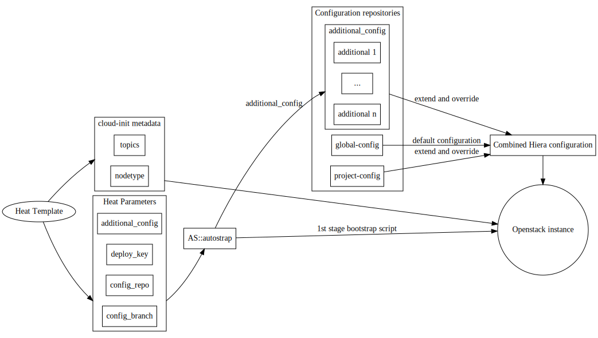

Machines deployed through Autostrap draw their configuration from various sources. The schematic above shows a big-picture view of these sources and how they interact with each other. In this section we will discuss the four sources for configuration information Autostrap uses:
- Default configuration from global-config
- project specific configuration from a project-config repository
- Additional user specified configuration repositories
- cloud-init user-data and metadata.
Read this section to get an in-depth tour of the configuration sources at your disposal. If you are itching to try Autostrap you can skip this section. Just create a private fork of project-config and move on to the Deployment Workflow section.
Configuration Sources
global-config: Default Configuration
The repository global-config contains
collections of Puppet classes along with matching
Hiera configuration to deploy on Openstack
instances. We refer to these collections as topics). Topics can
be deployed to instances in two ways: directly, using the topics
metadata parameter, or indirectly by
integrating them in a
project-config repository.
The global-config repository is meant as default configuration, to be overriden and extended
by the project-config repository described in the next
section.
Project Configuration
The second pilar of configuration is the project-config repository. This is where a Autostrap user will store most of their configuration. Since a fair amount of configuration is provided by global-config, this repository's configuration payload can be fairly small. For instance, the [project configuration content][ex::docserver] required to set up a web server building and serving this documentation consists of 69 lines at the time of this writing.
Usually a project-config repository starts out as a fork of Autostrap's
example project-config repository. We
recommend you store this fork in a private Git repository which is accessible
with an SSH deploy key provided to machines using the deploy_key parameter of
the AS::autostrap Heat resource.
The project-config repository's URL and revision are specified
through the config_repo
and config_branch
parameters to the
AS::autostrap Heat resource, respectively.
Additional Configuration
Finally, autostrap contains a mechanism for inserting arbitrary snippets of
Hiera configuration. This mechanism is controlled through the
AS::autostrap Heat resource's additional_config parameter
which contains a space delimited list of git repositories. These repositories
are cloned during bootstrapping, and entries in hiera.yaml referencing them are
generated.
additional_config Parameter Format
Entries in the list of repositories are formatted as follows:
<repository url>[#<revision>]::[[<path>][:<path> ...]]
An entry consists of the following components:
repository url |
The Repository's URL (mandatory). |
revision |
A revision (branch or commit ID) of the repository to check out (optional). |
path |
A path referencing a YAML file (the .yaml extension may be omitted), relative to the repository's root directory. Each of these paths will result in an entry in hiera.yaml. There may be multiple paths, separated by colons as in a $PATH variable. Paths my include shell wildcards (*, ?, etc.) which will be expanded. |
additional_config Example
This is what the contents of an additional_config parameter might look like:
'https://example.com/my-additional-config.git::ssh/mykeys.yaml \
git@gitlab.example.com:my-team/my-config.git#devel::config/ssh/keys:apache/*'
This will trigger the following actions:
- Clone
https://example.com/my-additional-config.gitand symlink it to/etc/puppet/hieradata/my-additional-config. - Add
my-additional-config/ssh/mykeysto Hiera's hierarchy. - Clone
git@gitlab.example.com:my-team/my-config.git, checkout revisiondeveland symlink it to/etc/puppet/hieradata/my-team. - Add
my-team/ssh/keys, and all contents of theapache/subdirectory to Hiera's hierarchy.
Entry Position in hiera.yaml
Hierarchy entries resulting from the additional_config parameter will appear
before entries from the project-config repository.
Repositories will appear in the order their repository specifications appear in
additional_config.
Paths associated with a given repository will appear in the order they were
given in the repository's additional_config entry.
cloud-init: User Data Script and Metadata Parameters
Last, but not least, cloud-init, is the glue that binds the other two configuration sources together. It is used in two ways: to inject a user-data script into an instance and to pass so-called 'metadata', a set of key-value parameters. The user-data script kicks off the bootstrapping process, the metadata parameters influence its behaviour.
cloud-init user-data script
The user-data script generated by AS::autostrap is parametrized by its parent heat template and passed to to all servers in a service stack. Through this mechanism the servers receive their deploy keys and their configuration repositories' URLs. This script is usually generated once per service stack and passed to all machines unchanged.
One notable parameter to this script is
override_yaml. It contains
the contents of override.yaml, a file that will appear at the very top of
the machine's hiera.yaml and override all other configuration. This
mechanism is very useful for deploying development stacks based off one or
more development branches, or for any other temporary configuration you don't
want to commit to your project-config repository.
If you require additional high-level entries, for instance to pull in passwords
automatically generated by your bootstraping scripts, you can use the
extra_overrides parameter to
add arbitrary hierarchy entries between override.yaml and
additional-config/project-config.
cloud-init metadata parameters
Various cloud-init metadata paremeters influence the behaviour of puppet,
pass information (such as its floating IP address), or control the
topics deployed on a given machine. Metadata parameters can
vary on a per-machine basis (e.g. typically only one machine will be assigned
the puppet-master topic while all others are assigned the puppet-agent
topic).